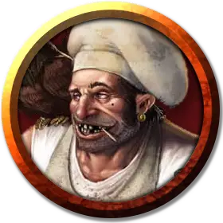

Бепис Медовар
Bepis Honeymaker
Маленький Гуманоид (Крепкий полурослик), любое мировоззрение, именной НИП

Класс Доспеха 10
Хиты 3 (1к6)
Скорость 25 футов
| мод | спас | ||
|---|---|---|---|
| СИЛ | 10 | +0 | +0 |
| ЛОВ | 10 | +0 | +0 |
| ТЕЛ | 10 | +0 | +0 |
| мод | спас | ||
|---|---|---|---|
| ИНТ | 10 | +0 | +0 |
| МДР | 10 | +0 | +0 |
| ХАР | 10 | +0 | +0 |
Чувства пассивное Восприятие 10
Языки Общий, Полуросликов
Опасность 0
Бонус мастерства +2
Особенности
Храбрый. Бепис совершает с преимуществом спасброски от испуга.
Проворство полуросликов. Бепис может проходить сквозь пространство, занятое существами, чей размер больше его.
Действия
Дубина. Рукопашная атака оружием: +2 к попаданию, досягаемость 5 футов, одна цель. Попадание: Дробящий урон 2 (1к4).
Описание
Бепис Медовар — торговец мёдом, которого похитили из Торгового района месяц назад. Гильдия Занатара по требовала за него выкуп, но, похоже, его родня то ли не смогла, то ли не захотела за него платить (на самом деле его подлая тёща сожгла письмо о выкупе и наврала жене и детям Беписа, будто он сбежал к другой семье). Амерго пристроил его работать на кухне, но то и дело грозится отдать свежевателю разума.